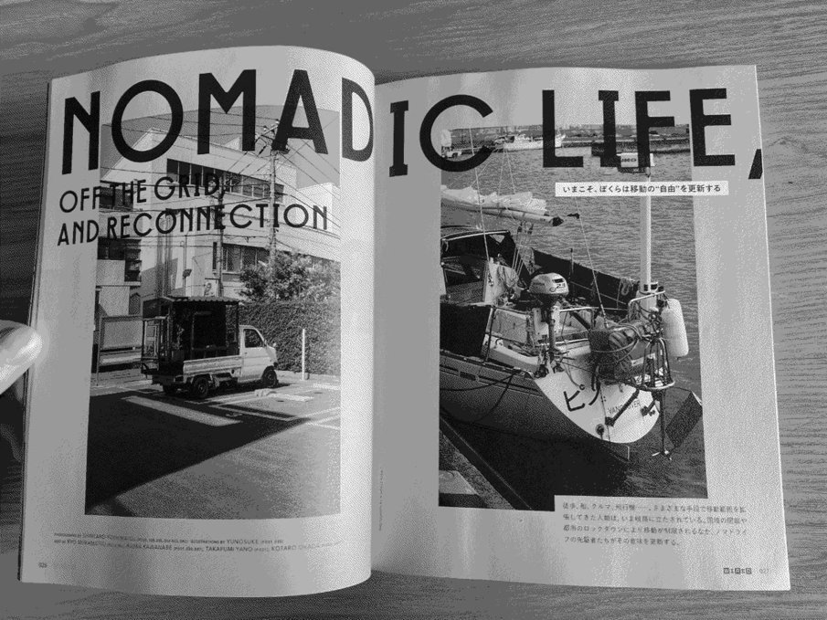

about
about us
Hundred Rabbits is an artist collective that document low-tech solutions with the hope of building a more resilient future. We live and work aboard a sailboat named Pino in remote parts of the world to learn more about how technology degrades beyond the shores of the western world.

- Receive monthly newsletter updates, or via RSS.
- Email us at rabbits ౷ 100r · co
- Visit our personal websites Kokorobot & XXIIVV.
- Follow us online: Rek & Neauoire
rabbits

Rek(they/them/iel) is a writer, illustrator and cartoonist, Devine(they) is a programmer, artist and musician, Little Ninj is our mascot and overlord.
pino

Our sailboat is a Yamaha33, a 1982 masthead sloop fiberglass sailboat. Fully-geared, stocked with provisions for 4 months (food & water) Pino weighs 7484,274 kg (16,500 lbs), or 8.25 tons. Out of the factory, the boat was 4,400 kg (9,700.00 lbs), or 4.85 tons (about half that weight is ballast).
Pino moves from ship to shore with Teapot. We carry two bikes aboard to explore the new places we visit, and to fetch groceries. Find out about our anchoring setup, water storage and how much energy we have onboard.
The name comes from that of the android in the anime Ergo Proxy, while Hundred Rabbits is inspired from the name of the sailboat in that same show, the Centzon Totochtin.
philosophy

We build software following these rules:
offline first
We build and design our software to work offline first. They will never need online resources to function properly, they will always be bundled with enough documentation to be repaired without our help. Our software will never be released behind any form of Digital Rights Management.
past proofing
We build simple tools to tackle specific tasks. We release builds and documentation to support a wide range of platforms, from native applications to terminal tools. We target 20 years old hardware as to encourage recyclism and discourage the consumption of fashionable electronics.
freedom
We release free and open-source programs so that they can be studied, inspected and repaired by anyone, anywhere. We create software and documentation for BSDs, GNU/Linux and Plan 9.
We are committed to fighting normative violence, fascism, colonialism, and racial supremacy in all of its forms. To undermine the capitalist structure and its abusive scripts about human worth in relation to work, productivity, and ownership. To subvert oppressive gender norms and put in question the binary. To actively unlearn biased and colonial thinking.
We are aggressively opposed to racism, sexism, homophobia, transphobia, nationalism, ethnocentrism, religious fundamentalism, and oppressive and coercive power structures of all kinds. ~

mission

We founded Hundred Rabbits so we could dedicate our time to the creation of small, playful, free, open-source software, while considering the impact of our works on the environment, and optimizing toward living more sustainably. We've adapted our software and projects around the limitations of our vessel instead of increasing its limits. We learned to appreciate these limits and think that they make our work better.
The benefits of many modern technologies today are illusory, and undermine people's self-sufficiency, freedom, and dignity. Ivan Illich proposed the concept of "convivial tools" that honor human agency and creativity. Convivial tools are not proprietary, in the style of many software today, but open-ended, flexible instruments that serve the needs and interests of ordinary individuals and communities.

We want our work to be an equal blend of aesthetics, playfulness, and practicality. We aim to keep our software small, portable and build from first principles to keep them participatory.
support

We don't run advertisements, this website has no tracking or analytics, our studio and its projects are supported by you. We accept donations through Stripe(monthly), Paypal, LiberaPay, and Patreon. To support us, you can also:
- Use our tools.
- Play our games.
- Help us find & fix bugs.
- Check out our store.
Every option helps! Thank you, a very brief way of expressing our boundless gratitude.
Rek & Devine
where
Pino's current location:
Victoria, western canada
Since 2016, Pino has travelled 22,912 nautical miles.
From 2016-2020 we circumnavigated the Pacific Ocean. We sailed from Western Canada to the US West coast, Mexico, French Polynesia, Cook Islands, Niue, Tonga, New Zealand, Fiji, The Marshall Islands, Japan and then back to Western Canada.
From 2020-2023 Pino has explored the Salish Sea, to see where we have been see Western Canada.
In 2024, Pino explored the North Coast of British Columbia, and US SE Alaska.
2016-2020 Pacific Route

View the interactive map for details.
website
This wiki is statically generated from a small C89 program, the sources are available here, if you find a typo, a broken link or have a code specific question, feel free to open an issue.
This website has no tracking or analytics.
license
The license applies to all the documented projects, the projects themselves and their assets. The source code of this website and our apps are under the MIT License, but the assets and text content of this website and of our apps are under the BY-NC-SA4.0 License. We are happy to pass knowledge, and that others can learn from our projects, improve on them, or make them into something else that is useful, but please, do not try to sell our projects as is under a different name. Doing so is very lazy, and disrespectful to us.
DO NOT resell or mint our work.
You can find our more recent projects on Sourcehut.
press
- performances
- workshops
- talks
- features
- articles
- interviews
- video
- appearances
- podcasts
- oquonie
- donsol
- hiversaires
performances
- AMP Industrial Events, Foufounes Electriques, Montreal QC, December 6th 2024.
- BioSonic, Galiano Island (BC, Canada), March 11th, 2023
- Flash Crash, online, July 10th, 2021.
- React Day Berlin Afterparty, Berlin, Germany, December 6th 2019.
- Algomech Festival, Sheffield, UK, May 18th 2019.
workshops
- Orca Workshop Foulab, Montreal, Canada, October 25th 2019.
- Algomech Festival: Orca workshop, Sheffield, UK, May 19th 2019.
talks
- Creative Coding Utrecht, Design Museum Den Bosch, 's-Hertogenbosch, December 6th, 2024.
- The Library Of Babel in Which Every Book is a Program, Handmade Seattle 2024, November 20th, 2024.
- Strange Loop, St. Louis (MO, United States), September 22nd, 2023.
- BioSonic: What are computers for, Galiano Island (BC, Canada), March 10th, 2023
- Weathering Software Winter, Handmade Seattle 2022, November 16th, 2022.
- Keynote talk, Nime 2022, online, June 28th, 2022.
- Keynote talk, Libre Planet 2022, online, March 19-20, 2022.
- Independent artists who live and work online, XOXO festival, Portland OR, 2019.
- Digital Nomads, Play by Play, New Zealand, 2018.
- The Frameworks for Mystics, A MAZE, Berlin, 2015.
features
- These artists are making tiny ROMs that will probably outlive us all, March 7th, 2022, The Verge.
- How We Survive: A changing mindset, December 5th, 2020, Marketplace.
- Depuis quatre ans, ce couple vit et travaille sur un voilier, October 1st, 2020, CANAL+.
- Everest Pipkin presents Left, September 9th, 2020, Clinic for Open Source Arts.
- Spell It Out With Text Art, August 11, 2020, SSense.
- Le code qui venait de l'eau, May 31, 2019, Geekzone.
- Raspberry Pi aboard a smart sailboat, April 4, 2018, Raspberry Pi blog.
- The Nomads of Game Development, August 23, 2016, VICE.
- Life aboard a boat lures new generation of romantics, Metro news.
- Two Canadian game developers set sail around the world, July 12, 2016, Dailyhive.
- Making games on a sailboat, April 19, 2016, Kill Screen.
- A design studio on a sailboat, December 12, 2015, Motherboard.
- Can Devine create his own language? Or a new world?, July 18, 2013, Kill Screen.
articles
- How to Save Energy when Cooking Onboard, Noonsite, September 7th, 2021.
- Working on board efficiently, Noonsite, August 23rd, 2020.
- Living off-grid, Noonsite, April 23, 2020.
interviews
- Behind The Screens: Aliceffekt, Creative Coding Utrecht, March 29th, 2022.
- An interview with 100 rabbits, SourceHut, December 7th, 2021.
- Distortion Festival As Above, So Below, HEAD – Genève, April 29th, 2021.
- Interview with 100 Rabbits, Esoteric.Codes, February 4th, 2021.
- Tout plaquer pour vivre sur un voilier, L'ADN, September 25th, 2020.
- Making games at sea, Checkpoints Gaming, May 3rd, 2020.
- I Have Been Living and Coding on a Sailboat Since 2016, GitNation, October 5th, 2019.
- Tools & techniques: Devine Lu Linvega, Uses This, August 8th, 2019.
- Tools & techniques: Rek Bell, Uses This, July 2, 2019.
- Developing Games and Tools from the Ocean, Itch.
- On Lifestyle, Monochromatic.
- On Design, Interface Lovers.
video
- Branching paths(Steam), Independent.
- In Our House, Patreon.
- These coders live and work at sea, Vocativ.
appearances
- NYKRA, Endesga.
- Toto Temple Deluxe, Juicy Beast.
- Orca: Eine Esoterische Programmiersprache[4.8 MB], #96, p.59-63, February 2023, Das Synthesizer Magazin.
- Changes in Latitudes, December 1st 2020, p.89-90, Latitude 38 magazine.
- Nomadic life, off the grid and reconnection, September 12th, 2020, Wired JP, vol.38., p.26-36
- Orca, procedural sequencer, n°230, January 2020, p.90, Linux pro magazine.
- Digital Nomads, May 1st 2019, p.107, Latitude 38 magazine.
- The Vlog Addict, Practical Boat Owner magazine.
- Rek Bell & Devine Lu Linvega: Deriveurs professionels, n°292, March 1st 2014, p.69, Canard PC magazine.
- Cook Island News, The Cook Island Newspaper.
podcasts
- De Retour du Futur, November 1st, 2023, Frugarilla.
- How we survive: a changing mindset, December 5th, 2020, Marketplace Tech.
- #45 - Orca: Devine Lu Linvega, Future of Coding.
- #44 - Making Your Own Tools: Devine Lu Linvega, Future of Coding.
- Episode #112: Devine Lu Linvega, Checkpoints podcast.
oquonie
- A maze worth entering, Kill Screen.
- Road to the IGF, Gamasutra.
- A paradox, Indiegame mag.
- Oquonie: Down the rabbit hole, Cnet.
donsol
- A deck of cards into a dungeon crawl, RockPaperShotgun
- The latest place you can explore dungeons? A deck of cards, Kill Screen.
hiversaires
- A worldless adventure through an alien world, The Verge
- Hiversaires rekindles the power of ignorance, Kill Screen.